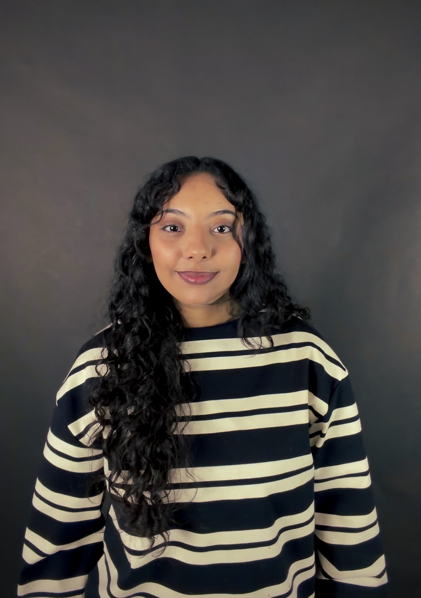

Vragenlijst
Studenten en bedrijven vullen vooraf in wat ze zoeken, wat ze kunnen en wat ze belangrijk vinden.

CROSSOVER is een netwerkevent waar design- en businessstudenten gematcht worden met bedrijven die echt bij ze passen.
Geen beurs
Geen rijen en geen gesprekken met het verkeerde bedrijf.
Wel een match
Je weet vooraf met wie je praat, en waarom.
Drie stappen. Scroll verder →
Studenten en bedrijven vullen vooraf in wat ze zoeken, wat ze kunnen en wat ze belangrijk vinden.
Op basis van de antwoorden koppelen we studenten aan bedrijven die bij ze passen.

Op het event korte gesprekken met je matches. Je laat je werk zien en maakt echt kennis.

Als student
Gesprekken met bedrijven die bij je passen. Je laat je werk zien aan de juiste mensen, voor een stage, een opdracht of gewoon een goed contact.
Als bedrijf
Talent dat al bij jouw vraag past. Geen stapel cv's, maar echte gesprekken, met design en business op één plek.
(Want eerlijk, wie heeft daar tijd voor?)
Studenten hebben talent en bedrijven zoeken talent. Toch lopen ze elkaar vaak mis.
Je portfolio staat online, maar niemand kijkt. Op een beurs sta je in de rij en praat je met het verkeerde bedrijf. En bedrijven zien honderden cv's, maar weten pas of iemand past als ze met diegene praten.
Daarom CROSSOVER
Een avond waar je vooraf weet met wie je praat. Design en business samen, omdat ze elkaar nodig hebben.


Mijn rol
CROSSOVER is mijn eigen project, dat ik samen met Maryam Laasiri doe, een international business student. Ik werk aan het concept, de branding en het design. Het project loopt nog.
Deze pagina is gemaakt in de stijl van het design van het project.
CROSSOVER is my own project, which I'm doing together with Maryam Laasiri, an international business student. I work on the concept, branding and design. The project is still ongoing.
This page is built in the style of the project's own design.
Eén vanuit design, één vanuit business. Precies waar CROSSOVER over gaat.

Bedacht CROSSOVER en zorgt voor het concept, de branding en het ontwerp.

Houdt zich bezig met de business-kant: bedrijven, partners en de organisatie.